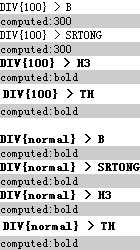
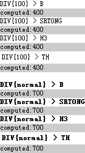

RA3002: IE8 Chrome Safari 中具有加粗效果的 HTML 元素的 'font-weight' 特性会受到其祖先元素的影响
标准参考
根据 W3C CSS2.1 规范中的描述，'font-weight' 特性描述了文字的粗细程度：
| 取值 |
|
||||||||||||||||||||||||
|---|---|---|---|---|---|---|---|---|---|---|---|---|---|---|---|---|---|---|---|---|---|---|---|---|---|
| 初始值 | normal | ||||||||||||||||||||||||
| 作用于 | 所有元素 | ||||||||||||||||||||||||
| 作用于 | 所有元素 | ||||||||||||||||||||||||
| 继承性 | 可以继承 | ||||||||||||||||||||||||
| 百分比 | N/A | ||||||||||||||||||||||||
对于所有浏览器，'font-weight' 取值为 100、200、300、400、500 时，文字均呈现正常不加粗效果，即 'normal'、'font-weight' 取值为 600、700、800、900 时，文字均呈显与 ’bold‘ 相同的加粗效果。
‘lighter’ 及 ‘bolder’ 则是相对的概念，它们分别指定了比继承来的 'font-weight' 特性更轻及更重的 'font-weight' 的数字值。
如父元素的 'font-weight' 计算值为 100，而子元素的 'font-weight' 设置为“bolder”，则子元素的计算后的 'font-weight' 为 200。若继承的值为 900，‘font-weight:bolder’ 计算后的值仍为 900；同样地，若继承的值为 100，‘font-weight:lighter’ 计算后的值仍为 100。
CSS2.1 附录中列出了 W3C 推荐的各 HTML 元素的默认样式，其中 TH、H1、H2、H3、H4、H5、H6、B、STRONG 这几个元素的 'font-weight' 特性默认值为 bolder。
关于 'font-weight' 特性的更多信息，请参考 CSS2.1 规范 15.6 Font boldness: the 'font-weight' property。
关于 W3C 推荐的 HTML 默认样式表，请参考 CSS2.1 规范 Appendix D. Default style sheet for HTML 4。
问题描述
在 Chrome 和 Safari 中，默认样式下的 B、STRONG 元素的 'font-weight' 特性计算值可能会受到其继承来的 'font-weight' 特性影响，在 IE8(S) 中，除 B、STRONG 外，H1~H6、TH 元素的 'font-weight' 特性也会受影响。在其他浏览器中，则完全不受影响。
造成的影响
由于此差异可能导致文本的 'font-weight' 特性计算后的值在各浏览器中出现差异。即影响文字的粗度。
受影响的浏览器
| IE8(S) Chrome Safari |
|---|
问题分析
在分析之前，首先确定一下各浏览器中对于 TH、H1、H2、H3、H4、H5、H6、B、STRONG 元素的 'font-weight' 特性的默认值：
对于非 IE 浏览器，可直接通过各自的开发人员工具查看到上述元素的默认样式；而 IE 各版本中均无法看到默认样式，可以通过如下代码推测：
<script>
function $(id) { return document.getElementById(id); }
for (var i = 100; i <= 900; i+=100) {
document.write('<div style="font-weight:' + i + '"><b id="b' + i + '">B{font-weight:<span></span>} </b></div>');
document.write('<div style="font-weight:' + i + '"><strong id="strong' + i + '">STRONG{font-weight:<span></span>} </strong></div>');
document.write('<div style="font-weight:' + i + '"><h3 id="h3' + i + '">H3{font-weight:<span></span>} </h3></div>');
document.write('<table border="1" style="font-weight:' + i + '"><tr><th id="th' + i + '">TH{font-weight:<span></span>}</th></tr></table>');
$("b" + i).getElementsByTagName("span")[0].innerHTML = $("b" + i).currentStyle.fontWeight;
$("strong" + i).getElementsByTagName("span")[0].innerHTML = $("b" + i).currentStyle.fontWeight;
$("h3" + i).getElementsByTagName("span")[0].innerHTML = $("b" + i).currentStyle.fontWeight;
$("th" + i).getElementsByTagName("span")[0].innerHTML = $("b" + i).currentStyle.fontWeight;
}
</script>
上面的代码在 IE 各版本中运行，IE8(S) 中前三组没有应用粗体，其他版本中则全是粗体，通过这个现象推测 IE8(S) 中上述元素的 'font-weight' 特性的默认值为 bolder，而其他版本中则为 bold。
在 Firefox 中，B、STRONG 元素的默认 'font-weight' 为 bolder，是一个相对量，而它们计算后的值比较特殊，为 401。H3、TH 元素的默认 'font-weight' 为 bold，是一个绝对量，所以其计算后的值仍为 bold。
在 Chrome、Safari 中，上述元素的默认 'font-weight' 与 Firefox 相同，不同之处为 B、STRONG 元素的计算值为 bold。
在 Opera 中，上述元素的 'font-weight' 无论是默认值还是计算值均为固定的 700，是绝对量。
整理成表格如下（H1、H2、H3、H4、H5、H6 具有相似性，这里仅列举 H3 元素）：
| IE6 IE7 IE8(Q) | IE8(S) | Firefox | Chrome | Safari | Opera | |
|---|---|---|---|---|---|---|
| B | 默认值：bold1 计算值：700 |
默认值：bolder1 计算值：700 |
默认值：bolder 计算值：401 |
默认值：bolder 计算值：bold |
默认值：bolder 计算值：bold |
默认值：700 计算值：700 |
| STRONG | 默认值：bold1 计算值：700 |
默认值：bolder1 计算值：700 |
默认值：bolder 计算值：401 |
默认值：bolder 计算值：bold |
默认值：bolder 计算值：bold |
默认值：700 计算值：700 |
| H3 | 默认值：bold1 计算值：700 |
默认值：bolder1 计算值：700 |
默认值：bold 计算值：bold |
默认值：bold 计算值：bold |
默认值：bold 计算值：bold |
默认值：700 计算值：700 |
| TH | 默认值：bold1 计算值：700 |
默认值：bolder1 计算值：700 |
默认值：bold 计算值：bold |
默认值：bold 计算值：bold |
默认值：bold 计算值：bold |
默认值：700 计算值：700 |
注1. 此值仅为通过测试代码得到的推测结果。
下面具体分析各浏览器下 'font-weight' 特性继承性的差异。
分析以下代码：
<!DOCTYPE html>
<html>
<head>
<style type="text/css">
* { font-size: 12px; margin: 0; }
</style>
</head>
<body>
<script>
window.onload = function() {
function $(id) {
return document.getElementById(id);
}
function $s($target, styleName) {
return document.defaultView ? document.defaultView.getComputedStyle($target, null).getPropertyValue(styleName)
: $target.currentStyle[styleName.replace(/-[a-z]/g, function() {
return arguments[0].charAt(1).toUpperCase();
})];
}
$("da1").innerHTML = "computed:" + $s($("a1"), "font-weight");
$("da2").innerHTML = "computed:" + $s($("a2"), "font-weight");
$("da3").innerHTML = "computed:" + $s($("a3"), "font-weight");
$("da4").innerHTML = "computed:" + $s($("a4"), "font-weight");
$("da5").innerHTML = "computed:" + $s($("a5"), "font-weight");
$("da6").innerHTML = "computed:" + $s($("a6"), "font-weight");
$("da7").innerHTML = "computed:" + $s($("a7"), "font-weight");
$("da8").innerHTML = "computed:" + $s($("a8"), "font-weight");
}
</script>
<div style="font-weight:100"><b id="a1">DIV{font-weight:100} > B</b></div>
<div style="background:#CCC;" id="da1"></div>
<div style="font-weight:100"><strong id="a2">DIV{font-weight:100} > SRTONG</strong></div>
<div style="background:#CCC;" id="da2"></div>
<div style="font-weight:100"><h3 id="a3">DIV{font-weight:100} > H3</h3></div>
<div style="background:#CCC;" id="da3"></div>
<div style="font-weight:100"><table><tr><th id="a4">DIV{font-weight:100} > TH</th></tr></table></div>
<div style="background:#CCC;" id="da4"></div>
<br />
<div style="font-weight:normal"><b id="a5">DIV{font-weight:normal} > B</b></div>
<div style="background:#CCC;" id="da5"></div>
<div style="font-weight:normal"><strong id="a6">DIV{font-weight:normal} > SRTONG</strong></div>
<div style="background:#CCC;" id="da6"></div>
<div style="font-weight:normal"><h3 id="a7">DIV{font-weight:normal} > H3</h3></div>
<div style="background:#CCC;" id="da7"></div>
<div style="font-weight:normal"><table><tr><th id="a8">DIV{font-weight:normal} > TH</th></tr></table></div>
<div style="background:#CCC;" id="da8"></div>
</body>
</html>
上面代码分为两组，每组内测试了 4 个元素—— B、STRONG、H3、TH 与父元素对于 'font-weight' 特性的继承关系。两组的区别为父元素的 'font-weight' 特性的设定值不同。
这段代码在不同浏览器中运行结果如下：
| IE6 IE7 IE8(Q) Opera | Firefox | Chrome Safari | IE8(S) |
|---|---|---|---|
 |
 |
 |  |
可见，对于具有加粗效果的 HTML 元素—— B、STRONG、H1~H6、TH：
- 在 IE6 IE7 IE8(Q) Opera 中，其继承来的 'font-weight' 特性的值无法影响其自身 'font-weight' 特性值的计算，所有元素仍具备加粗效果，而计算后 'font-weight' 均为 700，即 bold；
- 在 Firefox 中，在渲染效果上与上面 IE6 IE7 Opera 中一致，但是 B、STRONG 元素 'font-weight' 特性计算后的值为 101、401 等非法值，但是并没有影响到渲染；
- 在 Chrome Safari 中，对于 B、STRONG，由于其默认的 'font-weight' 为 bolder，是相对量，所以继承来的 'font-weight' 特性的值将会影响其自身 'font-weight' 属性值的计算。对于 H1~H6、TH，其默认的 'font-weight' 为 bold，是绝对量，这时继承来的 'font-weight' 特性的值无法影响其自身" 'font-weight' 特性值的计算；
- 在 IE8(S) 中，继承来的 'font-weight' 特性的值均会影响其自身 'font-weight' 特性值的计算。
最后，总结一下各浏览器对 'font-weight' 特性的 bolder 与 lighter 的计算差异。
<html>
<head>
<style>
* { font-size:12px; font-family:Tahoma; margin: 0; }
table { border-collapse;collapse; border-top:1px solid black; border-left:1px solid black; }
td, th { border-right:1px solid black; border-bottom:1px solid black; }
</style>
<script>
window.onload = function() {
function $(id) {
return document.getElementById(id);
}
function $s($target, styleName) {
return document.defaultView ? document.defaultView.getComputedStyle($target, null).getPropertyValue(styleName)
: $target.currentStyle[styleName.replace(/-[a-z]/g, function() {
return arguments[0].charAt(1).toUpperCase();
})];
}
var values = [0, 100, 200, 300, 400, 500, 600, 700, 800, 900, 1000, "normal", "bold"];
var str1 = [];
str1.push('<table cellpadding="2" cellspacing="0"><tr><th>V</th><th>P</th><th>B</th><th>L</th></tr>');
for (var i = 0, j = values.length; i < j; i++) {
var p = values[i];
str1.push('<tr><td>' + p + '</td>'
+ '<td><div id="div' + p + '" style="font-weight:' + p + '"></div></td>'
+ '<td><div style="font-weight:' + p + '"><span id="span' + p + '" style="font-weight:bolder;"></span></div></td>'
+ '<td><div style="font-weight:' + p + '"><span id="spanl' + p + '" style="font-weight:lighter;"></span></div></td></tr>');
}
str1.push('</table>');
$("table").innerHTML = str1.join("");
for (var i = 0, j = values.length; i < j; i++) {
var p = values[i];
$("div" + p).innerHTML = $s($("div" + p), "font-weight");
$("span" + p).innerHTML = $s($("span" + p), "font-weight");
$("spanl" + p).innerHTML = $s($("spanl" + p), "font-weight");
}
}
</script>
</head>
<body>
<div id="table"></div>
</body>
</html>
上面代码目的是测试当父元素的 'font-weight' 特性设置为：0、100、200、300、400、500、600、700、800、900、1000、normal、bold，且子元素分别设置了 ‘font-weight:bolder’ 与 ‘font-weight:lighter‘ 时，子元素计算后的 'font-weight' 的值的情况。
这段代码在不同浏览器中运行结果如下（白色背景代表未加粗，蓝色背景代表加粗）：
| font-weight | IE6 IE7 IE8 | Firefox | Chrome Safari | Opera | ||||||||
|---|---|---|---|---|---|---|---|---|---|---|---|---|
| Parent | Bolder | Lighter | Parent | Bolder | Lighter | Parent | Bolder | Lighter | Parent | Bolder | Lighter | |
| 0 | 400 | 700 | 100 | 400 | 401 | 399 | normal | bold | 300 | 400 | 700 | 400 |
| 100 | 100 | 400 | 100 | 100 | 101 | 100 | 100 | 300 | 100 | 100 | 400 | 100 |
| 200 | 200 | 500 | 100 | 200 | 201 | 199 | 200 | 300 | 100 | 200 | 400 | 200 |
| 300 | 300 | 600 | 100 | 300 | 301 | 299 | 300 | normal | 200 | 300 | 400 | 300 |
| 400 | 400 | 700 | 100 | 400 | 401 | 399 | normal | bold | 300 | 400 | 700 | 400 |
| 500 | 500 | 800 | 200 | 500 | 501 | 499 | 500 | bold | 300 | 500 | 700 | 400 |
| 600 | 600 | 900 | 300 | 600 | 601 | 599 | 600 | 800 | normal | 600 | 700 | 400 |
| 700 | 700 | 90 | 400 | 700 | 701 | 699 | bold | 800 | normal | 700 | 700 | 400 |
| 800 | 800 | 900 | 500 | 800 | 801 | 799 | 800 | 900 | 500 | 800 | 800 | 700 |
| 900 | 900 | 900 | 600 | 900 | 900 | 899 | 900 | 900 | bold | 900 | 900 | 700 |
| 1000 | 400 | 700 | 100 | 400 | 401 | 399 | normal | bold | 300 | 400 | 700 | 400 |
| normal | 400 | 700 | 100 | 400 | 401 | 399 | normal | bold | 300 | 400 | 700 | 400 |
| bold | 700 | 900 | 400 | bold | 701 | 699 | bold | 800 | normal | 700 | 700 | 400 |
上表中，第一列代表给父元素设置的 'font-weight' 特性的值，这之中有 'font-weight' 的所有绝对量的取值。列 Parent 代表在当前浏览器中父元素的 'font-weight' 特性计算后的值，列 Bolder 代表父元素内子元素的 'font-weight' 特性为 bolder 时的计算后的值，列 Lighter 代表父元素内子元素的 'font-weight' 特性为 lighter 时的计算后的值。
可见，关于父元素的 'font-weight' 设定值与计算后的值的关系：
- 在 IE Opera 中，不正确的值被修复为 400；
- 在 Firefox 中，不正确的值也被修复为 400，700 被 bold 替换；
- 在 Chrome、Safari 中，不正确的值被修复为 normal，400、700 分别被 normal、bold 替换。
关于 bolder 及 lighter：
- 在 IE 中，由于 normal 对应 400，bold 对应 700，浏览器将 bolder 与 lighter 的增减量定为了 300，当计算后大于 900 或小于 100 时仍按照 900 和 100 计算，而由于 100-500 时渲染为 normal，600-900 时渲染为 bold，则只有父元素 'font-weight' 特性为 100 及 200 时，由于子元素经过 bolder 后的计算值为 400 及 500，没有达到 600，所以这两种情况下子元素仍未“非加粗”。而 lighter 后的情况也是如此；
- 在 Firefox 中，忽略计算后的值的错误，则在渲染层面上看浏览器对于 bolder 和 lighter 的值的计算完全不参考其继承来的 'font-weight' 特性的值，对于 bolder 一律加粗，对于 lighter 一律不加粗；
- 在 Chrome Safari 中，bolder 和 lighter 的增减量并不是 IE 中的线性规律，可以很明显看到当父元素的 'font-weight' 特性计算值为 400 及以上时，子元素设置了 ’font-weight:bolder‘ 将呈现加粗效果。对于 lighter 则与 IE 一样，仅父元素 ’font-weight:900‘ 时，子元素设置了 ’font-weight:lighter’ 仍然呈现加粗效果；
- 在 Opera 中，bolder 和 lighter 的增减量同样不是线性规律，对于子元素设置 ‘font-weight:bolder’ 的渲染效果与 Chrome 一致，对于子元素设置 ‘font-weight:lighter’ 则比 Chrome 多了当父元素 ‘font-weight:800’ 时也会使子元素设置了 ‘font-weight:lighter’ 仍然呈现加粗效果。
解决方案
最好为元素设置绝对明确的 'font-weight' 特性的值，避免使用 bolder、lighter 这类相对量以及浏览器的默认样式。
参见
知识库
相关问题
测试环境
| 操作系统版本: | Windows 7 Ultimate build 7600 |
|---|---|
| 浏览器版本: |
IE6 IE7 IE8 Firefox 3.6.3 Chrome 5.0.375.29 dev Safari 4.0.5 Opera 10.52 |
| 测试页面: | font-weight.html bolder_lighter.html IE8_S.html |
| 本文更新时间: | 2010-08-06 |
关键字
font-weight bold bolder lighter normal 加粗 字体 B H1 H2 H3 H4 H5 H6 STRONG TH